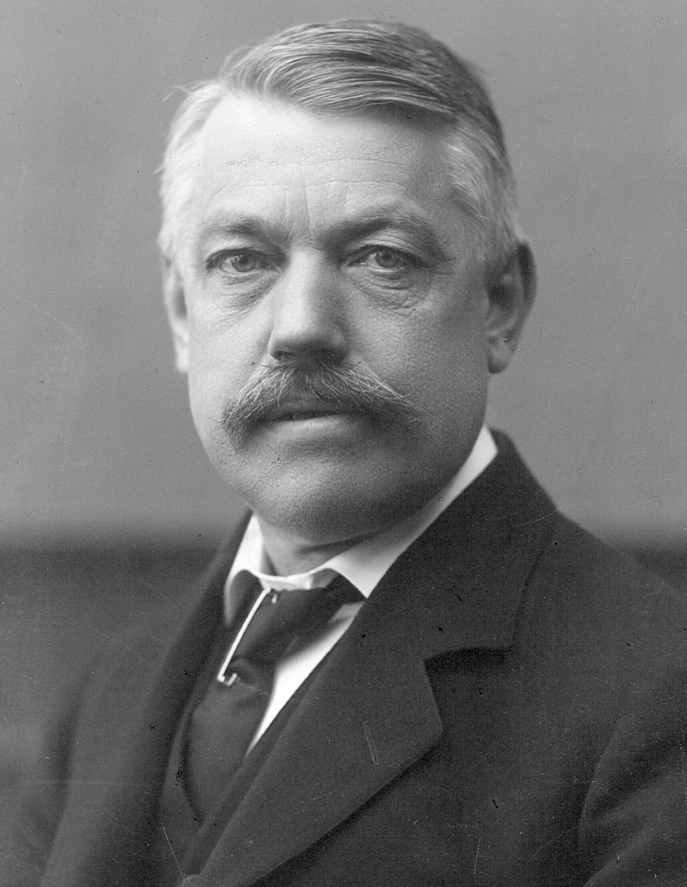

Christian Bohr était dans les patates
Mais pas au sujet de l’espace mort
Je dois presque tout ce que je sais au sujet du physiologiste danois Christian Bohr à un article écrit par un certain John B. West (2019).1 La raison en étant que, comme la majorité des gens faisant référence à Bohr, je ne maîtrise pas l’allemand, langue dans laquelle s’exprimait celui-ci. Et que Bohr est, à ce qu’on dit, passablement ardu à lire – même quand on maîtrise l’allemand.

{kind=link}
Bohr a publié en 1891 une formule qui est encore utilisée à ce jour pour calculer l’espace mort (Bohr 1891). Cette formule est basée sur la loi de Boyle-Mariotte. Selon cette loi, pour une quantité donnée de gaz, le produit de la pression P1 dans un volume V1 est égale au produit de la pression P2 le volume V2.
Appliquée à l’espace mort (), cela nous permet de savoir que la pression partielle de CO₂ dans les alvéoles () multipliée par le volume la portion du volume courant participant aux échanges gazeux () est égal à la pression partielle de CO₂ dans l’air expiré () multipliée par le volume courant ().
Et donc
Sachant que
On obtient
Ou
La formule de Bohr n’est pas parfaite. L’une de ses limitations est le fait qu’elle ne permette pas, dans sa forme originale, de mesurer un éventuel espace mort alvéolaire. En effet, si l’on compare la PCO₂ expirée moyenne () à la PCO₂ alvéolaire moyenne ()2, cela ne permet pas trouver dans quelle mesure cette PCO₂ alvéolaire est influencée par un éventuel espace mort alvéolaire (Tang, Turner, et Baker 2005). Il faut garder à l’esprit que Bohr étudiait la physiologie et non la physiopathologie du poumon. Il n’envisageait probablement pas la possibilité qu’il existe un espace mort alvéolaire.
La seconde limitation de la formule de Bohr est la difficulté de connaître la PCO₂ alvéolaire. L’approche utilisée par Bohr à ce sujet a été d’échantillonner le gaz dans la trachée, au niveau de la carène (d’un chien).
Le physiologiste suédois Henrik Enghoff apportera une solution pratique au problème de la PCO₂ alvéolaire en suggérant de la remplacer par la PCO₂ artérielle () (Enghoff 1938).
Ces deux pressions partielles sont, en effet, quasi identiques. Du moins dans des conditions normales. Outre son côté pratique, la solution proposée par Enghoff a aussi l’avantage de mesurer l’espace mort anatomique et alvéolaire.
On a reproché à cette solution de donner un résultat non seulement influencé par l’espace mort mais aussi par un éventuel shunt droit-gauche. Ceci peut être perçu à la fois comme une limitation et comme un avantage, ce calcul fournissant un index global de l’inefficacité des échanges gazeux, sans égard à la cause spécifique de cette inefficacité. Par ailleurs, si cela est théoriquement possible, il faut un shunt passablement important pour influencer significativement l’espace mort calculé par la formule de Enghoff (Tang, Turner, et Baker 2005).
Si la formule de Bohr pour l’espace mort a grandement contribué à l’étude de la physiologie pulmonaire, ce n’était pas le sujet principal de l’article où elle apparaît. Elle ne constitue qu’un détail méthodologique de cet article. Dans l’article question, Bohr soutient la thèse (en vogue à l’époque) selon laquelle le poumon sécrète activement (tel une glande) l’oxygène dans le sang et le gaz carbonique dans les alvéoles, à rebours de leurs gradients de pression respectifs. Comme quoi on peut avoir raison sur un sujet et être dans les patates sur un autre sujet.